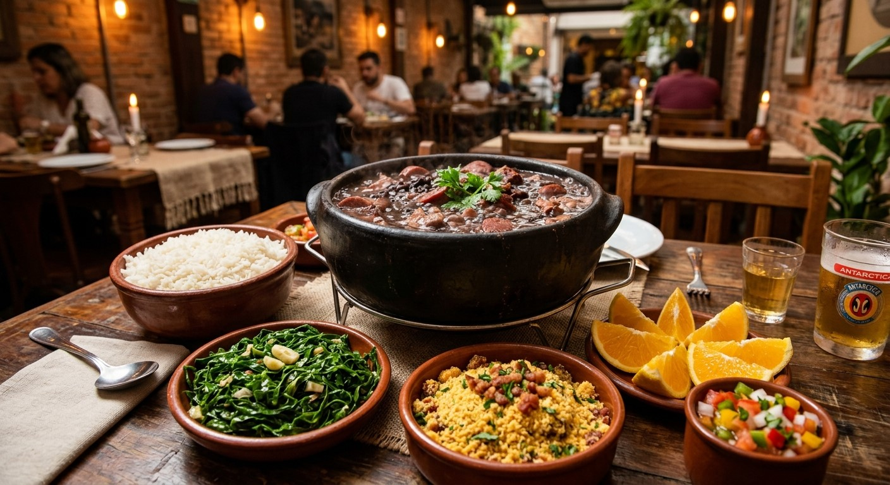
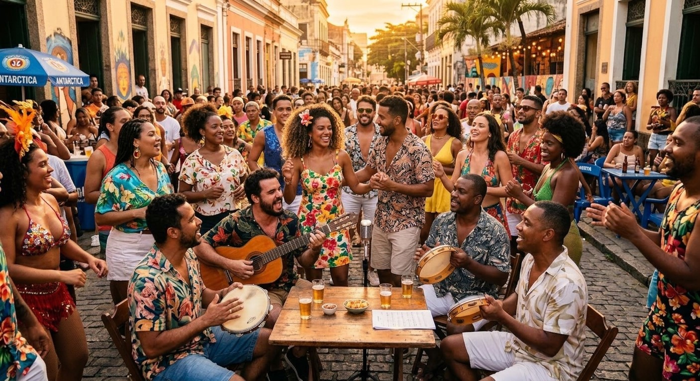
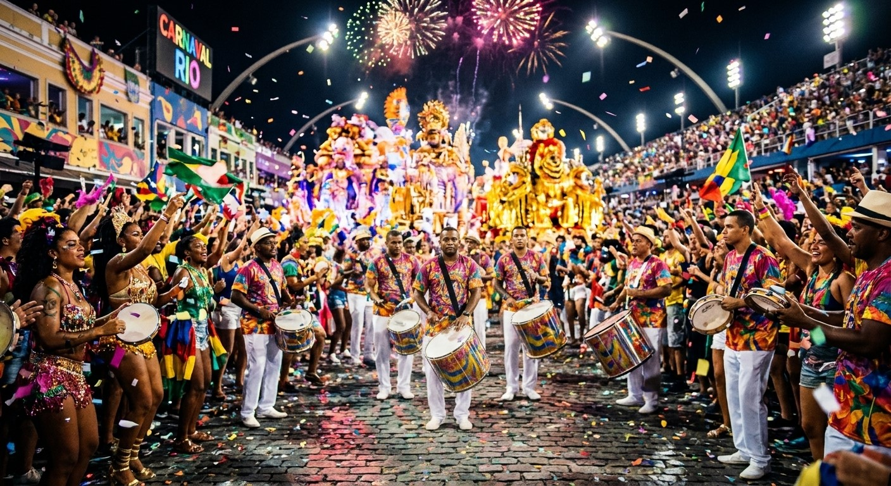
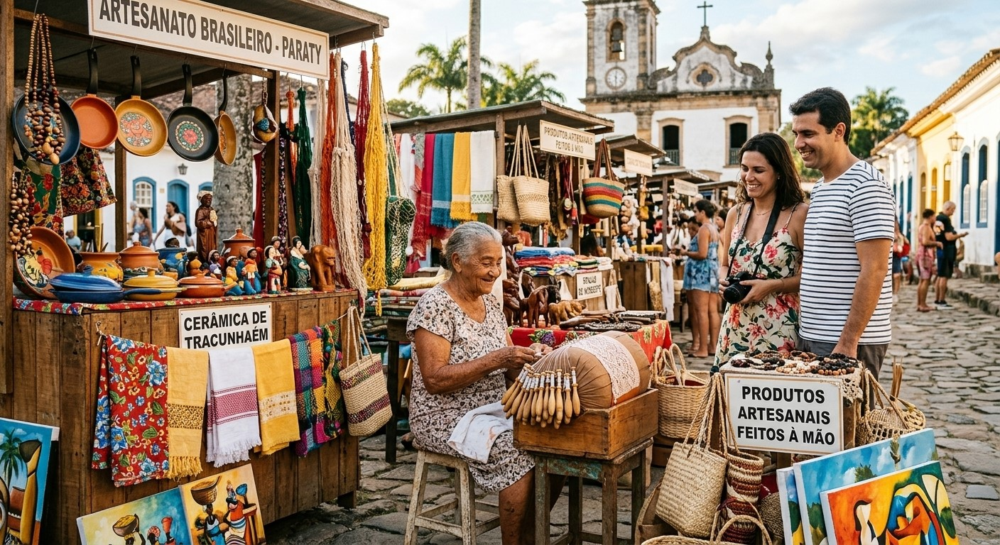
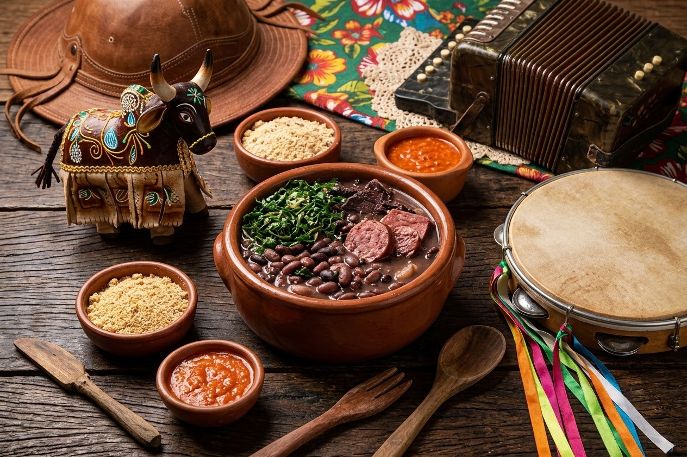

Culinária Brasileira
Feijoada
Um dos pratos mais representativos da culinária brasileira, conhecido por sua riqueza de sabores e ingredientes.
CULTURA BRASILEIRA
Conheça algumas das culturas mais importantes do nosso país.

Um dos pratos mais representativos da culinária brasileira, conhecido por sua riqueza de sabores e ingredientes.

Uma das maiores danças brasileiras, reconhecida mundialmente por sua energia e sua contribuição à cultura popular.

Uma das maiores festas populares do Brasil, conhecida por sua alegria, cores e diversidade cultural.

Tradição milenar de artesanato brasileiro, reconhecida por sua beleza e autenticidade.
Diversidade brasileira
A cultura brasileira é uma mistura de histórias, sabores, ritmos e tradições que tornam nosso país único.
Da riqueza da nossa culinária aos ritmos contagiantes do samba e do frevo, cada expressão revela um pouco de quem somos.
Nossas festas populares mantêm vivas tradições de diferentes regiões, enquanto a arte e o artesanato preservam histórias e conhecimentos passados de geração em geração.
Cada detalhe revela a diversidade e a criatividade do povo brasileiro.
Venha explorar essa riqueza cultural e descubra o Brasil por um novo olhar em nossa exposição!

NOSSA CULTURA
Cada expressão representa vivências, diversidade e o orgulho de nossa história
Garanta Seu Ingresso →